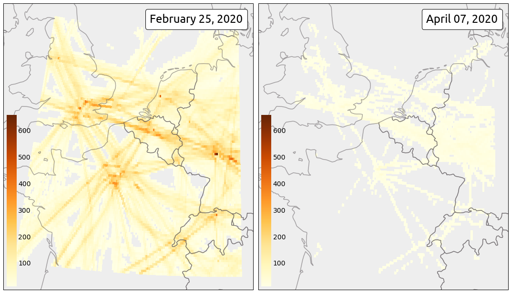

Flight density heatmaps
(contribution by Simon Proud @simon_sat)
Heatmaps are a convenient way to visualise information on a map. Common applications are related to aviation include visualisation of temperatures, thunderstorm activities, turbulence, and traffic density.
The traffic library provides a fast (a pandas implementation) and comfortable way to aggregate data into a structure which can easily be plotted on maps.
The COVID-19 situation is a perfect use case to demonstrate how to make flight density visualisations, before and after the crisis.
You will find below the code producing the following maps.
{kind=link}
First download the data from the Impala shell over your area of interest (ground trajectories are kept out of the dataset).
from traffic.data import opensky
# Setting up the start and end times for the retrieval
# This one is the pre-crisis day
pre_day = "2020-02-25"
# This one is the post-crisis day
post_day = "2020-04-07"
# This bounding box covers Western Europe (4 major airports)
# lon0, lat0, lon1, lat1
bounds = [-3, 45., 10., 55.]
pre_data = opensky.history(
start=pre_day,
bounds=bounds,
other_params=" and onground=false "
)
post_data = opensky.history(
start=post_day,
bounds=bounds,
other_params=" and onground=false "
)
# Saving data (optional)
pre_data.to_pickle("2020-02-25_extended_muac.pkl")
post_data.to_pickle("2020-04-07_extended_muac.pkl")
The data preparation including removing invalid data (a set of convenient heuristics which do the job in most situations), assigning a different id to all trajectory legs, applying default cascade filters, and resampling the data to one point per second.
Note that it is always a good practice to resample trajectories as the operation includes heuristics to remove abnormal and inconsistent timestamps.
before_covid19 = (
pre_data.clean_invalid()
.assign_id() # helps counting the number of flight rather than aircraft
.filter() # filter abnormal values
.resample("10s") # we don't need so many points for a heatmap
.eval(desc="", max_workers=4) # multiprocessed (watch your RAM usage!)
)
after_covid19 = (
post_data.clean_invalid()
.assign_id()
.filter()
.resample("10s")
.eval(desc="", max_workers=4)
)
# Saving data (optional)
before_covid19.to_pickle("before_covid19.pkl")
after_covid19.to_pickle("after_covid19.pkl")
The .agg_latlon() methods returns a pandas DataFrame indexed by rounded latitude and longitude values. .to_xarray() require the xarray library (to be installed separately) which provides proper plot methods to add the heatmap to the maps.
import matplotlib.pyplot as plt
from matplotlib.offsetbox import AnchoredText
from mpl_toolkits.axes_grid1.inset_locator import inset_axes
from cartopy.crs import EuroPP, PlateCarree
from cartes.utils.features import countries, ocean
with plt.style.context("traffic"):
fig = plt.figure(figsize=(15, 10), frameon=False)
ax = fig.subplots(1, 2, subplot_kw=dict(projection=EuroPP()))
for ax_ in ax:
ax_.add_feature(countries(scale="50m", linewidth=1.5))
ax_.background_patch.set_facecolor("#eeeeee")
vmax = None # this trick will keep the same colorbar scale for both maps
for i, data in enumerate([before_covid19, after_covid19]):
cax = (
data.query("altitude > 10000")
.agg_latlon(
# 10 points per integer lat/lon
resolution=dict(latitude=10, longitude=10),
# count the number of flights
flight_id="nunique"
).query(f"flight_id > 10") # do not display outlier flights
.to_xarray()
.flight_id.plot.pcolormesh(
ax=ax[i],
cmap="YlOrBr",
transform=PlateCarree(),
vmax=vmax,
add_colorbar=False,
)
)
cbaxes = inset_axes(ax[i], "4%", "60%", loc=3)
cb = fig.colorbar(cax, cax=cbaxes)
# keep this value to scale the colorbar for the second day
vmax = cb.vmax
text = AnchoredText(
f"{data.start_time:%B %d, %Y}",
loc=1,
prop={"size": 24, "fontname": "Ubuntu"},
frameon=True,
)
text.patch.set_boxstyle("round,pad=0.,rounding_size=0.2")
ax[i].add_artist(text)
fig.set_tight_layout(True)